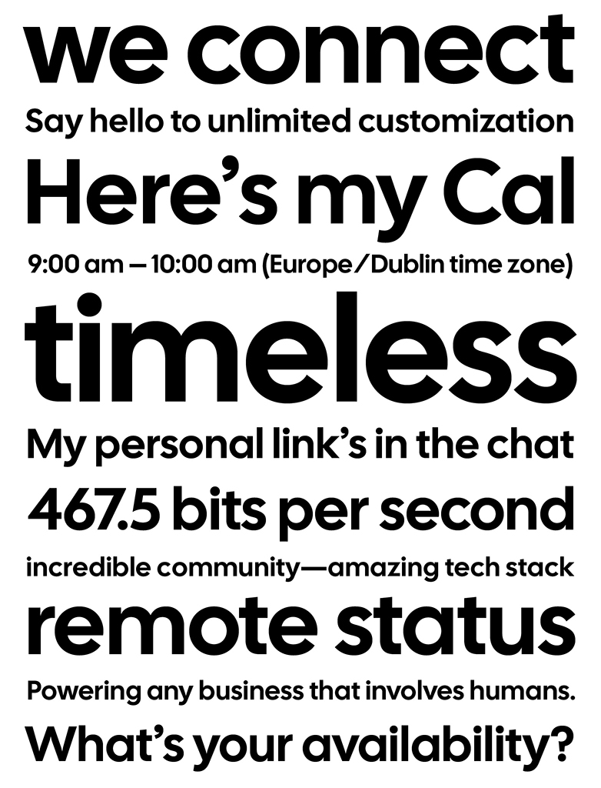
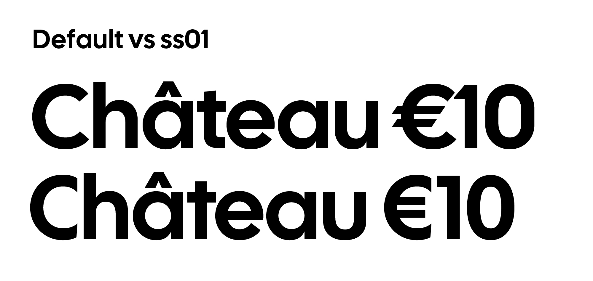
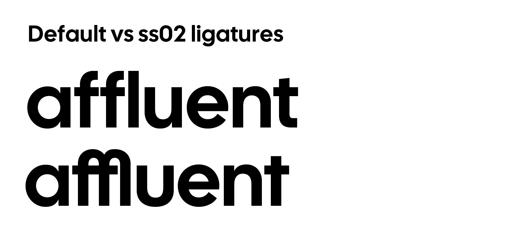
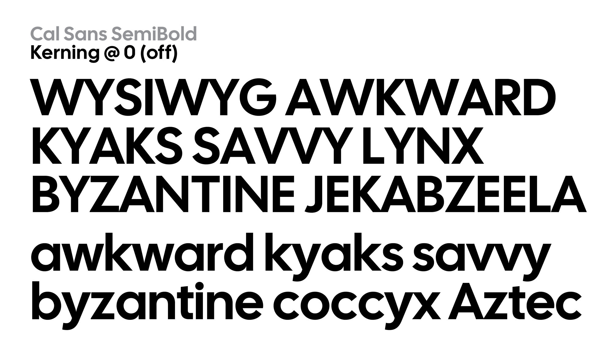

Cal Sans is a geometric sans-serif typeface designed for display, particularly large point sizes. It was created by Mark Davis for Cal.com by Peer Richelsen and Bailey Pumfleet, with interface design by Ciarán Hanrahan, and is open source. The design aims for a serious and geometric aesthetic, ensuring circular shapes throughout the “cal.com” lettering.
To contribute, see github.com/calcom/font.
Cal Sans is a geometric sans-serif tuned for display, that is, large point sizes. It is an Open Source typeface to adorn the headlines and interfaces of Cal.com, a company founded by Peer Richelsen and Bailey Pumfleet and interface design by Ciarán Hanrahan.
The basis of Cal Sans is my initial answer to what my Futura would be. It fit well with Peer’s brief, for something serious and and geometric so that the letters of “cal.com” would have circular shapes throughout. It was decided early on that it be open source for all!
As this design was created for display, and is currently a single static font, an unusual approach is taken for its texture and default typography. Letters are intentionally spaced to be extremely close for tight headlines “out of the box.” For smaller subheadings, positive letter spacing must be applied. There are currently no other Open Source geometric sanserifs geared as intentionally for “tight but not touching” typesetting—as it is more labor intensive to produce with accurate texture. But for typesetters, if they would letterspace another design as tight as Cal Sans, the results would not be as consistent.

So, for end users, more flexibility is available when the tightest typesetting extreme edge case is gracefully addressed. One may create looser typesetting as needed.
While the default design is fairly ahistorical, there are historical design options. Using Stylistic Set 01 (ss01), Futura-specific alternates can be deployed. Including diacritic variants, there are 48 alternates for this set.
I give credit to Rasmus Andersson implementing in his design Inter Character Variants to offer more control in website typography. Cal Sans also employs this feature. There are six Character Variants in Cal Sans, for Cc (cv01), j (cv02), t (cv03), u (cv04), 0 (cv05), and 1 (cv06).
In celebration of Futura’s geometrically extreme ligatures, Cal Sans has an experimental approach to ligatures, Stylistic Set 02 (ss02) is identical to ss01, but also combines eligible letters as historical Futura ligatures. This is included as a stylistic set and not as discretionary ligatures because default characters really do not match these historical ligatures. (But they were included anyway!)
Probably the most novel OpenType feature of Cal Sans is its third Stylistic Set (ss03). The best way to exhibit the need of ss03 is to see how “tight but not touching” affects spacing with consecutive diagonals. Some designers would never want their letters to overlap or touch in a headline, or very large title.
Diagonals’ corners are kerned from eachother, and some might say this causes more problems than the “stock” kerning solves. Such letter combinations aren’t…incredibly common. But they are not rare, nor is spacing letters in a way that is sometimes consistent a goal of mine. But, I see merits in both paths. So, ss03 overrides diagonal-to-diagonal kerning pairs with new ones that let diagonal corners “crash.”
I don’t know of any other typefaces that has many kerning options, hopefully this feature is of use! Thanks to Tal Leming’s OpenType Cook Book for technical details.